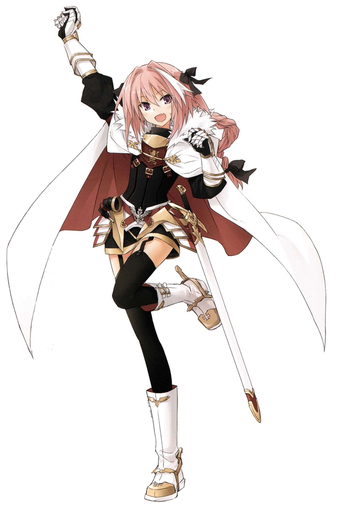
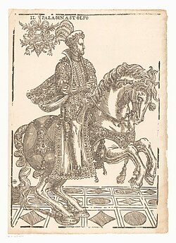

| Perguntas | Informações |
|---|---|
| Foto: |  |
| Nome: | Astolfo |
| Casta | Principe do imperio de Mércia, Britania |
| Idade: | Aproximadamente 26 anos |
| Formações academicas: | Escola de cavalaria britanica, Leitura de mapas, Escola economica Britanica/Francesa, Escola de Historia Britanica |
| Caracteristicas/poderes: | Invocar um hipogrifo Treinado, conhecimentos de economia, geografia, leitura de mapas, historia, esgrima, feitiçaria basíca, Montaria, treinamento com lanças, treinamento com espadas, treinamento com magias, dentre outras. |
| Estilo de vida: | Femboy |
| Alinhamento politico: | Liberal em formação na escola economica Britanica |
| Alguns Feitos: | Astolfo derrotou o gigante Caligorante, que lançou uma rede roubada do templo (a mesma que Hefesto usara para capturar Afrodite e Ares durante o adultério), prendendo e devorando todos os viajantes que passavam perto dele. O herói conseguiu derrotá-lo graças ao som de sua trombeta mágica, que assustou Caligorante, que acabou caindo em sua própria rede. Após derrotá-lo, Astolfo desfila o gigante de cidade em cidade, forçando-o a agir como seu animal de carga. Ele também derrota Orillo, um ladrão que não podia ser morto porque estava encantado para se regenerar de qualquer ferimento sofrido. Até mesmo membros amputados eram recolocados. Astolfo o derrotou após procurar seu nome no índice de seu livro de feitiços, descobrindo assim que para derrotá-lo ele tinha que remover todo o cabelo de sua cabeça, sabendo disso Astolfo procede a cortar a cabeça de Orillo e então escapar em seu cavalo enquanto o corpo sem cabeça do ladrão o persegue, depois de chegar longe o suficiente Astolfo senta-se com a cabeça do ladrão em seus joelhos e prossegue cortando seu cabelo com sua espada, matando assim Orillo. Astolfo empresta sua lança dourada e Rabicano a Bradamante por um curto período enquanto ele monta no hipogrifo em busca do juízo perdido de Orlando. |
| Links para contato: |